배관기능장 (2002-04-07 기출문제)
1과목: 임의구분
1. 위생 배관 시공에 관한 설명으로 올바른 것은?
- 가옥 배수관이 공공 배수관에 연결되는 곳에는 이물질을 제거하도록 여과기를 설치한다.
- 위생 기구의 통기관은 기구 배수구 근처 통기 수직관으로 바로 연결할 수 있다.
- 간접 배수 수직관의 신정 통기관과 일반 배수 수직관의 신정 통기관은 함께 사용할 수 없다.
- 통기가 불량한 위치에서 배수를 원활하게 할 수 있도록 하는 방법이 간접 배수이다.
(정답률: 58%)

2. 다음 중 일반적인 집진법의 종류가 아닌 것은?
- 원심력식 집진법
- 세정식 집진법
- 여과식 집진법
- 진공식 집진법
(정답률: 65%)
3. 증기난방에 비해 온수난방의 특징을 설명한 것이 잘못된 것은?
- 예열에 시간이 걸린다.
- 난방부하의 변동에 따른 온도 조절이 곤란하다.
- 동일 발열량에 비해 방열 면적이 많이 필요하다.
- 보일러 취급이 용이하며 비교적 안전하다.
(정답률: 75%)
4. 기구 정압기 방식과 전용 정압기 방식 및 병용 공급 방식으로 분류되는 도시가스 공급방식은?
- 저압 공급방식
- 중압 공급방식
- 정압 공급방식
- 고압 공급방식
(정답률: 62%)
5. 급수펌프 배관 시공에 관한 설명으로 틀린 것은?
- 흡입관은 되도록 짧고 굴곡이 적게한다.
- 토출 수평관은 공기가 차지 않도록 올림구배를 한다.
- 토출쪽 수직 상부에 수격작용 방지 시설을 한다.
- 토출양정이 18 m 이상이면 토출구와 토출밸브 사이에 체크밸브를 설치하지 않는다.
(정답률: 80%)
6. 자동화 시스템에서 인간의 두뇌에 해당하는 부분으로, 제어정보를 분석처리하여 필요한 제어명령을 내려주는 제어신호 처리장치로 자동화의 5대 요소 중 하나인 것은?
- 센서(sensor)
- 네트워크(network)
- 프로세서(processor)
- 소프트웨어(software)
(정답률: 70%)
7. 표준화를 CAD에 적용시 자동화에 적합한 설계기술 업무와 도면작성 업무로 분류할 때 도면작성 업무 분야인 것은?
- 단순한 도형의 배열이나 원,곡선 등이 많은 분야
- 설계 이론이 정식화되어 있으나 계산이 복잡한 분야
- 극히 많은 기술정보 중 가장 적합한 것을 구하는경우
- 여러개의 설계조건 중 가장 적합한 것을 골라내는 경우
(정답률: 72%)
8. 1시간 당 급탕 동시 사용량이 3000ℓ 인 급탕 주관의 관경으로 가장 적합한 것은? (단, 유속은 1m/sec 이고, 순환 탕량은 동시 사용량의 약 2.5 배 정도로 한다.)
- 25A
- 42A
- 50A
- 80A
(정답률: 72%)
9. 스트레지(strage)탱크 또는 탱크 히터(tank heater)라고 하는 증기를 공급하는 저탕조를 사용하는 급탕법은?
- 직접 가열법
- 간접 가열법
- 기수 혼합법
- 복사법
(정답률: 60%)
10. 배수 설비에서 통기관을 사용하는 가장 중요한 목적은?
- 변소의 오기를 방지하기 위하여
- 트랩의 봉수를 보호하기 위하여
- 오수의 역류를 방지하기 위하여
- 공기를 잘 유통시키기 위하여
(정답률: 76%)
11. 정화조의 입구에서 출구까지 순서로 가장 적합한 것은?
- 부패조 → 산화조 → 소독조 → 예비여과조
- 부패조 → 예비여과조 → 산화조 → 소독조
- 산화조 → 소독조 → 부패조 → 예비여과조
- 산화조 → 예비여과조 → 부패조 → 소독조
(정답률: 76%)
12. 진공 환수식 증기 난방에서 방열기보다 높은 곳에 환수관을 배관할 경우에 사용하는 것은?
- 하드포드(hardford)배관법
- 리프트 피팅(lift fitting)
- 파일럿 라인(pilot line)
- 동층 난방식
(정답률: 81%)
13. 배관의 이동 구속 제한을 하고자 할 때 사용되는 레스트 레인트(Restraint)의 종류에 해당되지 않는 것은?
- 앵커(Anchor)
- 스토퍼(Stopper)
- 가이드(Guide)
- 크램프(Clamp)
(정답률: 79%)
14. 유기용제의 세정제로서 난연성 불수용성의 액체이며 석유계 유기물의 용해 세정에 적합한 것은?
- 황산
- 수산화 나트륨
- 암모니아
- 트리클로르 에틸렌
(정답률: 68%)
15. 배수관 및 통기관의 배관 완료 후 또는 일부 종료 후 각기구 접속구 등를 밀폐하고, 배관 최상부에서 배관 내에 물을 가득 채운 상태에서 누수의 유무를 시험하는 것은?
- 수압 시험
- 통수 시험
- 연기 시험
- 만수 시험
(정답률: 88%)
16. 사용압이 비교적 낮은 증기, 물, 기름 및 공기 등의 배관용에 적합한 배관용 탄소 강관의 KS 재료기호는?
- SPP
- SPPS
- SPPH
- SPH
(정답률: 67%)
17. 인탈산 동관에 관한 설명으로 틀린 것은?
- 연수(軟水)에는 부식된다
- 담수(淡水)에는 내식성이 강하다.
- 고온에서 수소 취화 현상이 발생한다.
- 탄산가스를 포함한 공기 중에서는 푸른 녹이 생긴다.
(정답률: 74%)
18. 석면과 시멘트를 중량비 1 : 5 정도의 비율로 배합하고, 적당한 양의 물로 혼합하여 윤전기에 의해서 얇은 층을 만들어 로울러로 압력을 가하면서 성형한 관은?
- 흄관
- 콘크리트관
- 에터니트관
- 경질 염화 비닐관
(정답률: 60%)
19. 증기의 공급압력과 응축수의 압력차가 0.35kgf/cm2 이상 일 때에 한하여 사용할 수 있으며, 용도가 유닛 히터나 가열 코일인 특수 트랩은?
- 플로트 트랩
- 벨로즈 트랩
- 버킷 트랩
- 플러시 트랩
(정답률: 56%)
20. 패킹재를 가스킷, 나사용 패킹, 글랜드 패킹으로 분류할 때, 나사용 패킹으로 분류되는 것은?
- 모넬메탈
- 액상 합성수지
- 메탈 패킹
- 플라스틱 패킹
(정답률: 82%)
2과목: 임의구분
21. 다른 보온재에 비하여 단열효과가 낮아 다소 두껍게 시공하며, 500℃ 이하의 파이프나 탱크, 노벽 등에 물을 가하여 반죽하여 칠하는 대표적인 수결재(水結材) 보온재는?
- 석면
- 규조토
- 암면
- 탄산 마그네슘
(정답률: 72%)
22. 주철관 중 일명 구상 흑연 주철관 이라고 하는 것은?
- 수도용 입형 주철관
- 수도용 원심력 금형 주철관
- 수도용 원심력 사형 주철관
- 수도용 원심력 덕타일 주철관
(정답률: 87%)
23. 스테인레스 강관의 이음쇠 중 동합금제 링을 캡너트로 죄어서 고정시켜 결합하는 이음쇠는?
- MR 조인트 이음쇠
- 몰코 조인트 이음쇠
- 랩 조인트 이음쇠
- 팩레스 조인트 이음쇠
(정답률: 77%)
24. 관 신축이음쇠 중 단식과 복식이 있고, 일명 펙레스(Pack less)형 신축이음쇠라고도 하는 것은?
- 슬리브형 신축이음
- 벨로즈형 신축이음
- 루프형 신축이음
- 스위블형 신축이음
(정답률: 78%)
25. 은분이라고도 하며 방청효과가 크고, 내구성이 풍부한 도막을 형성하며, 400-500℃의 내열성을 지니고 있어 난방용 방열기 등의 외면에 도장하는 것은?
- 광명단 도료
- 알루미늄 도료
- 산화철 도료
- 고농도 아연 도료
(정답률: 71%)
26. "밀폐된 용기 중에 정지 유체의 일부에 가해진 압력은 유체 중의 모든 부분에 일정하게 전달된다" 라는 원리는?
- 베르누이(Bernoulli)의 정리
- 파스칼(pascal)의 원리
- 오일러(Euler)의 원리
- 연속의 법칙
(정답률: 66%)
27. 20℃의 유체 10kg을 80℃로 만드는데 필요한 열량은 몇 Kcal 인가? (단, 이 유체의 비열은 0.5kcal/Kg℃ 이다.)
- 300
- 400
- 1200
- 600
(정답률: 42%)
28. 구리관의 끝부분을 정확한 지름의 원형으로 만들 때 사용하는 공구는?
- 가열기(heater)
- 커터(cutter)
- 사이징 투울(sizing tool)
- 익스팬더(expander)
(정답률: 83%)
29. 강관을 4조각 내어 90° 마이터관을 만들려할 때 절단각은 얼마인가?
- 7.5°
- 11.25°
- 15°
- 22.5°
(정답률: 81%)
30. 파이프 나사부의 길이를 필요 이상 길게 만들어서는 아니되는 중요한 이유가 아닌 것은?
- 관 재료를 절약하기 위하여
- 관 두께가 얇아지기 때문에
- 나사부의 강도가 감소되기 때문에
- 아연 도금한 부분이 깎여 부식되기 쉬운 부분이 많아지기 때문에
(정답률: 78%)
31. 2개의 플랜지와 2개의 고무링 및 1개의 슬리브를 사용하는 석면 시멘트관의 이음은?
- 칼라 이음(Collar joint)
- 심플렉스 이음 (Simplex joint)
- 기볼트 이음 (Gibault joint)
- 슬리브 이음 (Sleeve joint)
(정답률: 54%)
32. 배관용 공기기구 사용시 안전수칙 중 틀린 것은?
- 처음에는 천천히 열고 일시에 전부 열지 않는다.
- 기구 등의 반동으로 인한 재해에 항상 대비한다.
- 공기 기구를 사용할 때는 방진 안경을 사용한다.
- 활동부에는 항상 기름 또는 그리스가 없도록 깨끗이 닦아 준다.
(정답률: 89%)
33. 폴리에틸렌관을 접합할 때 관끝의 외면(外面)과 이음관의 내면(內面)을 동시에 가열용융하며 접합하는 방법은?
- 열간 삽입접합법
- T.S식 삽입접합법
- H.S식 삽입접합법
- 용착 슬리브접합법
(정답률: 80%)
34. 다음 중 폴리부틸렌관만의 이음 방법인 것은?
- 압축 이음 (compressed joint)
- 플라스턴 이음 (plastann joint)
- 에이콘 이음 (acorn joint)
- 몰코 이음 (molco joint)
(정답률: 80%)
35. 주철관의 소켓이음(socket joint)할 때 누수의 원인으로 가장 적합한 것은?
- 얀(yarn)의 양이 너무 많고 납이 적은 경우
- 코킹하기 전에 관에 붙어있는 납을 떼어낸 경우
- 코킹 세트를 순서대로 차례로 사용한 경우
- 코킹이 완전한 경우
(정답률: 86%)
36. 다음 주철관의 이음방법 중 다소의 굴곡에서도 누수가 없고 수중에서도 이음이 가능한 이음 방법은?
- 소켓 이음
- 플랜지 이음
- 메캐니컬 이음
- 빅토릭 이음
(정답률: 54%)
37. 순수한 물의 물리적 성질에 관한 설명으로 올바른 것은?
- 비중량은 1㎏/cm3 이다.
- 물의 비중은 0 ℃ 일 때 1 이다.
- 점성계수는 온도가 높을수록 작아진다.
- 해수(바다 물)보다 비중이 약 1.2 배 크다.
(정답률: 78%)
38. 비중이 0.95인 기름속에 있는 물체가 깊이 20m일 때 받는 압력은 몇 ㎏f/cm2 인가?
- 2.95
- 1.9
- 2.11
- 0.97
(정답률: 51%)
39. 다음은 용접의 극성을 설명한 것이다. 올바른 것은?
- 직류 정극성(DCSP)은 용접봉을 양극(+), 모재를 음극 (-)측에 연결한 것이다.
- 직류 역극성(DCRP)은 용접봉의 용융속도가 빠르나 모재의 용입이 얕아지는 경향이 있다.
- 직류 역극성(DCRP)은 용접봉을 음극(-) 모재를 양극 (+)측에 연결한 것이다.
- 교류 용접기의 극성은 용접봉측에 양극(+), 모재측에 음극(-) 만 연결된다.
(정답률: 71%)
40. 정격 2차전류가 200A, 정격 사용률은 40%인 아크용접기로 175A의 용접전류로 용접할 경우 허용 사용률은?
- 30.62%
- 49.38%
- 52.24%
- 55.13%
(정답률: 57%)
3과목: 임의구분
41. 다음 중 용접부의 비파괴 시험에 해당하는 것은?
- 화학 분석 시험
- 마이크로 조직 시험
- 형광 침투 시험
- 크리이프 시험
(정답률: 85%)
42. 다음 중 불활성가스 금속 아크용접은?
- TIG 용접
- CO2 용접
- MIG 용접
- 플라즈마 용접
(정답률: 73%)
43. 후판을 다층 용접할 때 회전변형(rotational distortion)이 가장 크게 나타나는 층은?
- 제1층
- 전층에서 일정하다.
- 제2층
- 맨 마지막층
(정답률: 69%)
44. 접합하려는 2개의 부재 중 한쪽의 부재에 둥근 구멍을 뚫고 뚫은 구멍을 용접하여 두 부재를 이음하는 것은?
- 플러그 용접
- 심 용접
- 플레어 용접
- 점 용접
(정답률: 67%)
45. KS 배관 도시기호로 배관 끝면에 그림과 같이 표시한 것은?
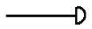
- 나사 박음식 캡
- 나사 박음식 플러그
- 용접식 캡
- 용접식 플랜지
(정답률: 87%)
46. 라인 인덱스(line index)의 기재에서 LS는 무엇을 나타내는가?
- 계기용 공기
- 고압 공기
- 저압 증기
- 작업용 공기
(정답률: 77%)
47. 다음 중 볼 밸브의 KS 배관 도시 기호인 것은?
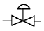
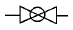
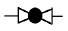
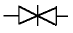
(정답률: 79%)
48. 다음과 같이 표시된 유압, 공기압 도면기호의 명칭은?
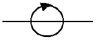
- 공기압 전용 배기구
- 접속구 없는 배기구
- 회전이음(스위블 조인트)
- 첵크 밸브없는 금속이음
(정답률: 84%)
49. 배관의 높이 치수 앞에 EL 만 표시되어 있는 높이는?
- 관 외경의 아랫면까지 높이
- 관 외경의 윗면까지 높이
- 관 내경의 윗면까지 높이
- 관의 중심까지 높이
(정답률: 72%)
50. 다음 그림 중 가이드(guide)는 어느 것인가?
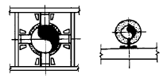
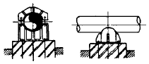
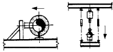
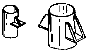
(정답률: 84%)
51. 60° × 30° 직각 삼각형 모양의 앵글 브래킷의 C 부 길이는 약 몇 mm 인가?
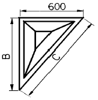
- 800
- 1040
- 1200
- 1800
(정답률: 84%)
52. 다음 유체의 종류 기호 연결 중 잘못된 것은?
- 기름 - 0
- 증기 - W
- 가스 - G
- 공기 - A
(정답률: 86%)
53. 다음 용접부 비파괴 시험방법 기호의 해독으로 올바른 것은?
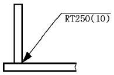
- 누설탐상시험이다.
- 형광자분탐상이다.
- 250mm씩 10개소를 시험한다.
- 화살표 반대쪽에서 시험한다.
(정답률: 77%)
54. 다음 용접기호 중 필릿용접의 병렬단속 용접을 나타내는 기호로 적합한 것은?
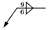
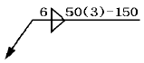
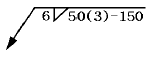
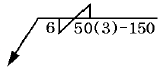
(정답률: 68%)
55. 도수분포표에서 도수가 최대인 곳의 대표치를 말하는 것은?
- 중위수
- 비 대칭도
- 모우드(mode)
- 첨도
(정답률: 73%)
56. 일정통제를 할 때 1일당 그 작업을 단축하는데 소요되는 비용의 증가를 의미하는 것은?
- 비용구배(Cost slope)
- 정상 소요시간(Normal duration)
- 비용견적(Cost estimation)
- 총비용(Total cost)
(정답률: 76%)
57. 서블릭(therblig)기호는 어떤 분석에 주로 이용되는가?
- 연합작업분석
- 공정분석
- 동작분석
- 작업분석
(정답률: 53%)
58. 관리도에서 점이 관리한계내에 있고 중심선 한쪽에 연속해서 나타나는 점을 무엇이라 하는가?
- 경향
- 주기
- 런
- 산포
(정답률: 59%)
59. 모집단의 참값과 측정 데이터의 차를 무엇이라 하는가?
- 오차
- 신뢰성
- 정밀도
- 정확도
(정답률: 52%)
60. 준비작업시간이 5분, 정미작업시간이 20분, lot수 5, 주작업에 대한 여유율이 0.2라면 가공시간은?
- 150분
- 145분
- 125분
- 1⑤분
(정답률: 61%)